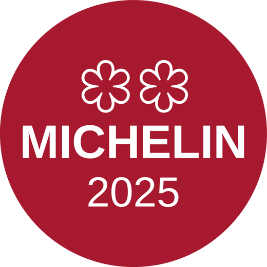
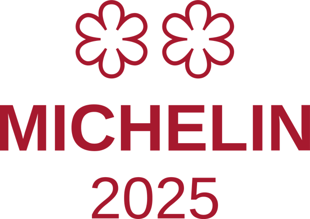

L’expérience en 5 services
199CHF
- Amuse-Bouche
- Première Entrée
- Deuxième Entrée
- Plat Principal
- Dessert

Une expérience différente
Restaurant · Saint-Germain, Savièse
Une expérience différente. Découvrez une cuisine passionnée, mettant à l’honneur des saveurs les plus locales possibles.

C’est niché en plein cœur du charmant village de Saint Germain, au centre de Savièse, que vous pourrez retrouver le Restaurant Gilles Varone dans son ambiance intimiste et décontractée.
Situé dans le nouveau quartier de Saint Germain centre, le restaurant au rez-de-chaussée vous offrira une vue imprenable sur les Alpes valaisannes et saura rapidement vous mettre à l’aise au sein de son atmosphère chaleureuse.
« Plus qu’un simple repas, mon ambition en tant que Chef est de vous offrir un moment authentique, orienté autour du partage de mon amour pour la cuisine. »Gilles Varone · Chef & patron
Il me tient à cœur de vous dévoiler moi‑même les subtilités présentes dans chacun de mes plats.
En cinq, six ou sept services et toujours servies par l’équipe de cuisine. Les expériences que je vous propose se différencient par le nombre de services qu’elles incluent.
Uniquement durant le mois d’octobre, selon les disponibilités
Sur demande préalable uniquement, retrouvez toutes les expériences dans leurs versions végétariennes
Les expériences destinées à plus de 8 personnes s’effectuent par le biais de demandes spéciales
Veuillez noter que l’expérience choisie sera identique pour tous les convives assis au sein d’une même table. Je vous propose des accords mets et vins et des accords mets et créations sans alcool concoctés par nos soins avec chacune de mes expériences.
Ma relation à la cuisine a commencé par un apprentissage à la CRR SUVA de Sion. Afin de parfaire mon art, j’ai ensuite pris mon envol pour l’Angleterre où j’ai notamment pu y obtenir le titre de Meilleur Jeune Chef du pays octroyé par The Craft Guilds of Chefs.
J’ai ainsi décidé de lancer mon premier restaurant sur mes terres natales, afin de partager avec vous mes découvertes et mon savoir-faire.
Des plats de saison et des ingrédients que je sélectionne finement auprès des producteurs de la région, tout en accordant une attention toute particulière à la valorisation du terroir. Je m’applique à tisser des liens solides avec de nombreux acteurs; du producteur au client, en passant par mon équipe.
J’honore l’héritage que m’ont légué les chefs étoilés par la recherche de l’équilibre parfait des saveurs, l’attention particulière aux détails, au travail sur l’esthétisme de mes plats et en surprenant autant que possible vos cinq sens.
Je vous accueillerai chaleureusement afin de vous faire découvrir, au travers de mes expériences, le monde culinaire qui me passionne tant. De plus, il me tient à cœur de vous dévoiler moi-même les subtilités présentes dans chacun de mes plats, c’est pourquoi je viendrai vous servir personnellement à votre table.

Des plats de saison et des ingrédients que je sélectionne finement auprès des producteurs de la région, tout en accordant une attention toute particulière à la valorisation du terroir. Je m’applique à tisser des liens solides avec de nombreux acteurs; du producteur au client, en passant par mon équipe.

J’honore l’héritage que m’ont légué les chefs étoilés par la recherche de l’équilibre parfait des saveurs, l’attention particulière aux détails, au travail sur l’esthétisme de mes plats et en surprenant autant que possible vos cinq sens.
Je vous accueillerai chaleureusement afin de vous faire découvrir, au travers de mes expériences, le monde culinaire qui me passionne tant. De plus, il me tient à cœur de vous dévoiler moi-même les subtilités présentes dans chacun de mes plats, c’est pourquoi je viendrai vous servir personnellement à votre table.

Le restaurant et son équipe obtiennent leur deuxième étoile au Guide Michelin.
Depuis début octobre 2026, le restaurant Gilles Varone est noté 18 points au GaultMillau.
A l’occasion de la nouvelle édition du Guide Michelin 2024, le restaurant s’est vu décerner le prix du Meilleur Jeune Chef Suisse 2024.
Après seulement 3 mois d’ouverture, le restaurant et son équipe obtiennent leur premier titre au Gault & Millau.
Un menu unique, changeant au gré de la qualité et de la saisonnalité des produits.
Il est possible de commander des bons cadeaux personnalisés avec des montants à choix.
Profitez du parking sous terrain gratuit, montez à l’étage supérieur avec votre voiture et prenez l’ascenseur jusqu’à l’étage zero.
Ligne de bus no 341 et 342 depuis Poste, Gare Sion jusqu’à Saint Germain centre Savièse.
Rue du Stade 5B, 1965 Savièse
027 565 89 20 · info@gillesvarone.ch